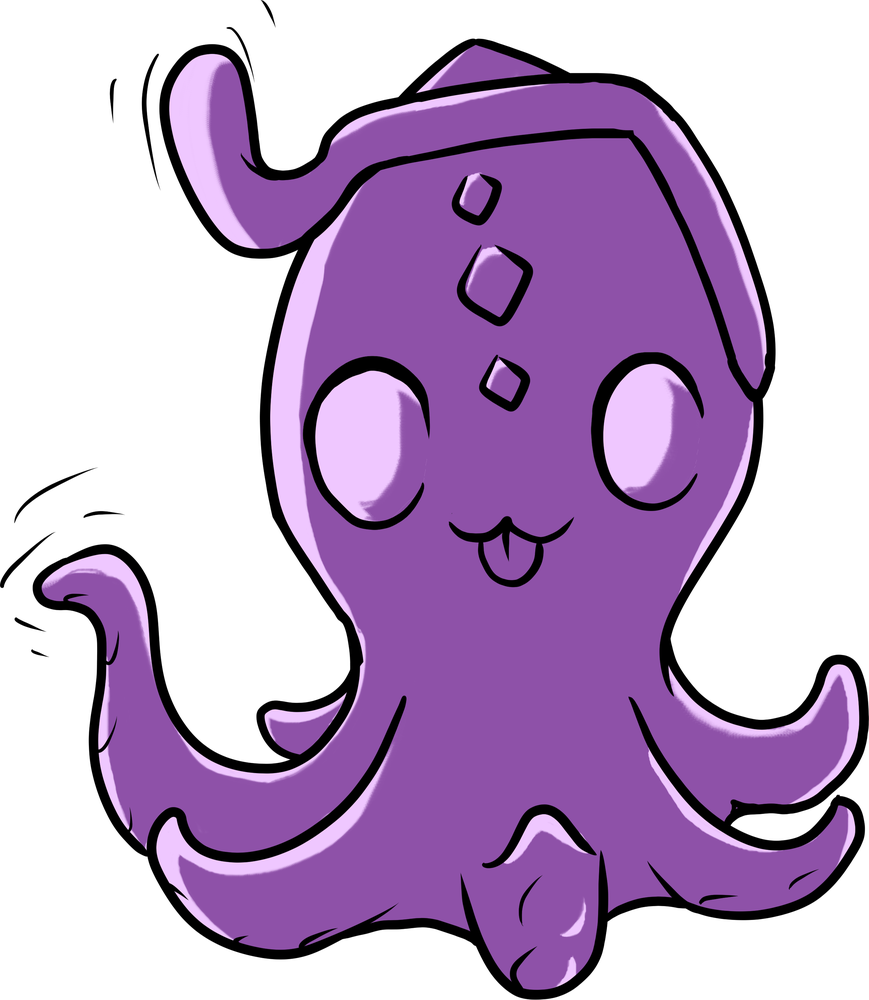

cute little comics
SPECIAL ISSUE
STAR SIGNS
each toy's sun sign, part 1!
astrologically awesome!!!

♋
♏
♓
whether or not you believe in astrology, see which adorable monsters share your sign!
swipe →
first up, the water signs...
starsi
cancer ♋

both sea creatures, sure! but there's also a softness and a sweetness to Starsi.
Starsi carries a lot of space for people's feelings.
as you're figuring things out, I'll hold you and make things better!
princette
scorpio ♏
another water sign (what did you expect for a half-octopus?)
the epitome of passion: sassy, playful, always up for sexy times, magnetic & mysterious


deep purple: super-sensual
platinum: adds to the drama
shimmer
pisces ♓
slippery like a fish, with sweet little flippers... of course Shimmer is a water sign!

but it's not just the obvious stuff. Shimmer is:
★ deeply empathetic
★ intuitive
★ creative
I can sense what your body needs in the moment and adapt!
are you twinning with any of these CLFs?
next week, peep the rest!
to be continued...
peep your perfect match → LINK IN BIO